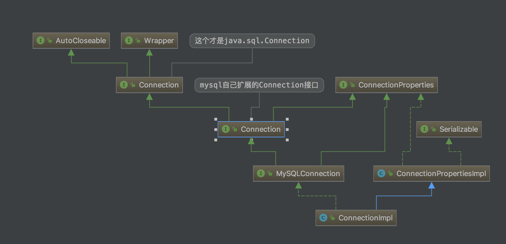
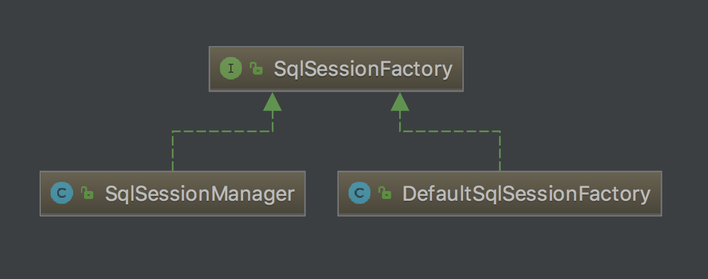

title: 设计模式
date: 2020-4-16
comments: true
toc: true
categories: “设计模式”
tags:
- 设计模式
看一个披萨的项目：要便于披萨种类的扩展，要便于维护
披萨的种类很多(比如 GreekPizz、CheesePizz 等)
披萨的制作有 prepare，bake, cut, box
完成披萨店订购功能。
这样设计耦合性很高，一个orderPizza类也依赖了具体的实现GreekPizza和CheessPizza，如果增加新的披萨种类，会有更多的依赖，违反了OCP原则。

// 构造器
public OrderPizza() {
Pizza pizza = null;
String orderType; // 订购披萨的类型
do {
orderType = getType();
//这里每次增加新的种类披萨都要修改代码
if (orderType.equals("greek")) {
pizza = new GreekPizza();
pizza.setName(" 希腊披萨 ");
} else if (orderType.equals("cheese")) {
pizza = new CheesePizza();
pizza.setName(" 奶酪披萨 ");
} else {
break;
}
//输出pizza 制作过程
pizza.prepare();
pizza.bake();
pizza.cut();
pizza.box();
} while (true);
}
// 写一个方法，可以获取客户希望订购的披萨种类
private String getType() {
try {
BufferedReader strin = new BufferedReader(new InputStreamReader(System.in));
System.out.println("input pizza 种类:");
String str = strin.readLine();
return str;
} catch (IOException e) {
e.printStackTrace();
return "";
}
}优点是比较好理解，简单易操作。
缺点是违反了设计模式的 ocp 原则，即对扩展开放，对修改关闭。即当我们给类增加新功能的时候，尽量不修改代码，或者尽可能少修改代码.
比如我们这时 要新增加一个 Pizza 的种类(Pepper 披萨)，我们需要做如下修改.
if (orderType.equals("greek")) {
pizza = new GreekPizza();
pizza.setName(" 希腊披萨 ");
} else if (orderType.equals("cheese")) {
pizza = new CheesePizza();
pizza.setName(" 奶酪披萨 ");
} else if (orderType.equals("pepper")) {
pizza = new PepperPizza();
pizza.setName("胡椒披萨");
} else {
break;
}如果我们增加一个 Pizza 类，只要是订购 Pizza 的代码都需要修改.
改进的思路分析
分析：修改代码可以接受，但是如果我们在其它的地方也有创建 Pizza 的代码，就意味着，也需要修改，而创建 Pizza的代码，往往有多处。
思路： 把创建 Pizza 对象封装到一个类中 ， 这样我们有新的 Pizza 种类时， 只需要修改该类就可，其它有创建到 Pizza
对象的代码就不需要修改了.-> 简单工厂模式
1) 简单工厂模式是属于 创建型模式，是工厂模式的一种。简单工厂模式是由一个工厂对象决定创建出哪一种产品
类的实例。简单工厂模式是 工厂模式家族中最简单实用的模式
2) 简单工厂模式：定义了一个创建对象的类，由这个类来 封装实例化对象的行为(代码)
3) 在软件开发中，当我们会用到大量的创建某种、某类或者某批对象时，就会使用到工厂模式.
####2)、关键代码（普通方法）
//定义一个简单工厂对象
SimpleFactory simpleFactory;
Pizza pizza = null;
//构造器
public OrderPizza(SimpleFactory simpleFactory) {
setFactory(simpleFactory);
}
public void setFactory(SimpleFactory simpleFactory) {
String orderType = ""; //用户输入的
this.simpleFactory = simpleFactory; //设置简单工厂对象
do {
orderType = getType();
pizza = this.simpleFactory.createPizza(orderType);
//输出pizza
if(pizza != null) { //订购成功
pizza.prepare();
pizza.bake();
pizza.cut();
pizza.box();
} else {
System.out.println(" 订购披萨失败 ");
break;
}
}while(true);
}这样的代码还可以升级为下面一种静态方法，不用new SimpleFactory实例，直接就可以调用。
工厂模式，工厂一般都有很多地方调用。一般要配合单例模式来进行使用。
public OrderPizza2() {
do {
orderType = getType();
pizza = SimpleFactory.createPizza2(orderType);
// 输出pizza
if (pizza != null) { // 订购成功
pizza.prepare();
pizza.bake();
pizza.cut();
pizza.box();
} else {
System.out.println(" 订购披萨失败 ");
break;
}
} while (true);
} 每一个OrderPizza去使用SimpleFactory时，只需要用createPizza2(创建对象)方法即可，不需要关注里面的实现细节。
//SimpleFactory里面的createPizza2方法
public static Pizza createPizza2(String orderType) {
Pizza pizza = null;
System.out.println("使用简单工厂模式2");
if (orderType.equals("greek")) {
pizza = new GreekPizza();
pizza.setName(" 希腊披萨 ");
} else if (orderType.equals("cheese")) {
pizza = new CheesePizza();
pizza.setName(" 奶酪披萨 ");
} else if (orderType.equals("pepper")) {
pizza = new PepperPizza();
pizza.setName("胡椒披萨");
}
return pizza;
}优点：
缺点：
在了解了优缺点后，我们知道了简单工厂模式的应用场景：
披萨项目新的需求：客户在点披萨时，可以点 不同口味的披萨，比如 北京的奶酪 pizza、北京的胡椒 pizza 或
者是伦敦的奶酪 pizza、伦敦的胡椒 pizza。
客户在点披萨时，可以点不同口味的披萨，比如 北京的奶酪 pizza、北京的胡椒 pizza 或者是伦敦的奶酪 pizza、伦敦的胡椒 pizza
说白了就是一个大工厂分解成若干个小工厂，由子类决定要实例化的类
public class PizzaStore {
public static void main(String[] args) {
String loc = "bj";
if (loc.equals("bj")) {
//创建北京口味的各种Pizza
new BJOrderPizza(); //原本一个大工厂，现在搞出不同的小工厂来了
} else {
//创建伦敦口味的各种Pizza
new LDOrderPizza();
}
}
}BJOrderPizza类（其中的一个小工厂）
public class BJOrderPizza extends OrderPizza {
Pizza createPizza(String orderType) {
Pizza pizza = null;
if(orderType.equals("cheese")) {
pizza = new BJCheesePizza();
} else if (orderType.equals("pepper")) {
pizza = new BJPepperPizza();
}
return pizza;
}
}LDOrderPizza类（其中的一个小工厂）
public class LDOrderPizza extends OrderPizza {
Pizza createPizza(String orderType) {
Pizza pizza = null;
if(orderType.equals("cheese")) {
pizza = new LDCheesePizza();
} else if (orderType.equals("pepper")) {
pizza = new LDPepperPizza();
}
return pizza;
}
}优点：
更符合开-闭原则
新增一种产品时，只需要增加相应的具体产品类和相应的工厂子类即可
简单工厂模式需要修改工厂类的判断逻辑
符合单一职责原则
每个具体工厂类只负责创建对应的产品
简单工厂中的工厂类存在复杂的switch逻辑判断
不使用静态工厂方法，可以形成基于继承的等级结构。
简单工厂模式的工厂类使用静态工厂方法
缺点：
总结：
工厂模式可以说是简单工厂模式的进一步抽象和拓展，在保留了简单工厂的封装优点的同时，让扩展变得简单，让继承变得可行，增加了多态性的体现。
在了解了优缺点后，总结了工厂方法模式的应用场景：
OrderPizza类中聚合AbsFactory接口（或抽象类），就代表聚合进去了BeiJing Orderpizza或London Orderpizza，这里可以进行选择实际子类的工厂究竟是哪一个。
//一个抽象工厂模式的抽象层(接口)
public interface AbsFactory {
//让下面的工厂子类来 具体实现
public Pizza createPizza(String orderType);
}BJFactory类实现AbsFactory接口
//这是工厂子类
public class BJFactory implements AbsFactory {
@Override
public Pizza createPizza(String orderType) {
System.out.println("~使用的是抽象工厂模式~");
Pizza pizza = null;
if(orderType.equals("cheese")) {
pizza = new BJCheesePizza();
} else if (orderType.equals("pepper")){
pizza = new BJPepperPizza();
}
return pizza;
}
}优点：
简单工厂模式需要修改工厂类的判断逻辑
简单工厂中的工厂类存在复杂的switch逻辑判断
简单工厂模式的工厂类使用静态工厂方法
缺点：
抽象工厂模式很难支持新种类产品的变化。
这是因为抽象工厂接口中已经确定了可以被创建的产品集合，如果需要添加新产品，此时就必须去修改抽象工厂的接口，这样就涉及到抽象工厂类的以及所有子类的改变，这样也就违背了“开发——封闭”原则。
如果实现要增加一个新的产品，在接口里面增加一个方法。这种直接修改抽象接口的做法，会导致其所有实现子类都需要进行修改，重写这个未实现的方法，违反了开闭原则。当然，如果这种修改是长期稳定的，那么也可以接受。
对于新的产品族符合开-闭原则；对于新的产品种类不符合开-闭原则，这一特性称为开-闭原则的倾斜性。
在抽象工厂模式中，增加新的产品族很方便，但是增加新的产品等级结构很麻烦，抽象工厂模式的这种性质称为“开闭原则”的倾斜性。
弹幕大神：
这个披萨的案例其实讲的不是很好，配合网上资料，大概能明白，网上有几篇文章将的不错
简书：抽象工厂模式（Abstract Factory）- 最易懂的设计模式解析
import java.util.Calendar;
public class Factory {
public static void main(String[] args) {
// getInstance 是 Calendar 静态方法
Calendar cal = Calendar.getInstance();
// 注意月份下标从0开始，所以取月份要+1
System.out.println("年:" + cal.get(Calendar.YEAR));
System.out.println("月:" + (cal.get(Calendar.MONTH) + 1));
}
}注意 Calendar cal = Calendar.getInstance(); 不是new出来的,而是通过getInstance（）一个静态方法得到对象，debug进去
public static Calendar getInstance()
{
return createCalendar(TimeZone.getDefault(),Locale.getDefault(Locale.Category.FORMAT));
}如果没有设定时区和位置，这里直接回返回默认的对象，
继续debug进去
private static Calendar createCalendar(TimeZone zone,
Locale aLocale)
{
CalendarProvider provider =
LocaleProviderAdapter.getAdapter(CalendarProvider.class, aLocale)
.getCalendarProvider();
if (provider != null) {
try {
return provider.getInstance(zone, aLocale);
} catch (IllegalArgumentException iae) {
// fall back to the default instantiation
}
}
Calendar cal = null;
if (aLocale.hasExtensions()) {
String caltype = aLocale.getUnicodeLocaleType("ca");
if (caltype != null) {
switch (caltype) {
case "buddhist":
cal = new BuddhistCalendar(zone, aLocale);
break;
case "japanese":
cal = new JapaneseImperialCalendar(zone, aLocale);
break;
case "gregory":
cal = new GregorianCalendar(zone, aLocale);
break;
}
}
}
if (cal == null) {
if (aLocale.getLanguage() == "th" && aLocale.getCountry() == "TH") {
cal = new BuddhistCalendar(zone, aLocale);
} else if (aLocale.getVariant() == "JP" && aLocale.getLanguage() == "ja"
&& aLocale.getCountry() == "JP") {
cal = new JapaneseImperialCalendar(zone, aLocale);
} else {
cal = new GregorianCalendar(zone, aLocale);
}
}
return cal;
}其中初始化Calendar cal = null;
然后通过switch使用不同工厂进行创建对象，使用了简单方法工厂模式，
最后return回去
Calendar cal = null;
if (aLocale.hasExtensions()) {
String caltype = aLocale.getUnicodeLocaleType("ca");
if (caltype != null) {
switch (caltype) {
case "buddhist":
cal = new BuddhistCalendar(zone, aLocale);
break;
case "japanese":
cal = new JapaneseImperialCalendar(zone, aLocale);
break;
case "gregory":
cal = new GregorianCalendar(zone, aLocale);
break;
}
}
}public interface Connection extends Wrapper, AutoCloseable {
//...
//返回普通的sql执行器
Statement createStatement() throws SQLException;
//返回具有参数化预编译功能的sql执行器
PreparedStatement prepareStatement(String sql) throws SQLException;
//返回可以执行存储过程的sql执行器
CallableStatement prepareCall(String sql) throws SQLException;
//...
}从上面的注释就可以看出，这就是典型的抽象工厂接口，描述了不同的产品等级Statement、PreparedStatement、CallableStatement，它们都位于抽象接口Statement产品等级结构中。我们可以继续寻找该抽象工厂接口的实现类
这里就以Mysql为例，可以找到Mysql对这个工厂接口的实现类ConnectionImpl，ConnectionImpl并不是直接实现了java.sql.Connection,而是通过实现自己扩展的MySQLConnection接口，该接口也是间接继承了java.sql.Connection
public class ConnectionImpl extends ConnectionPropertiesImpl implements MySQLConnection {
//...
public java.sql.Statement createStatement() throws SQLException {
return createStatement(DEFAULT_RESULT_SET_TYPE, DEFAULT_RESULT_SET_CONCURRENCY);
}
public java.sql.PreparedStatement prepareStatement(String sql) throws SQLException {
return prepareStatement(sql, DEFAULT_RESULT_SET_TYPE, DEFAULT_RESULT_SET_CONCURRENCY);
}
public java.sql.CallableStatement prepareCall(String sql) throws SQLException {
return prepareCall(sql, DEFAULT_RESULT_SET_TYPE, DEFAULT_RESULT_SET_CONCURRENCY);
}
//...
}以createStatement为例，跟踪其调用代码可以看到StatementImpl这个类就是实现了java.sql.Statement的具体产品类
public java.sql.Statement createStatement(int resultSetType, int resultSetConcurrency) throws SQLException {
checkClosed();
StatementImpl stmt = new StatementImpl(getMultiHostSafeProxy(), this.database);
stmt.setResultSetType(resultSetType);
stmt.setResultSetConcurrency(resultSetConcurrency);
return stmt;
}/**
* Creates an {@link SqlSession} out of a connection or a DataSource
*
* @author Clinton Begin
*/
public interface SqlSessionFactory {
SqlSession openSession();
SqlSession openSession(boolean autoCommit);
SqlSession openSession(Connection connection);
SqlSession openSession(TransactionIsolationLevel level);
SqlSession openSession(ExecutorType execType);
SqlSession openSession(ExecutorType execType, boolean autoCommit);
SqlSession openSession(ExecutorType execType, TransactionIsolationLevel level);
SqlSession openSession(ExecutorType execType, Connection connection);
Configuration getConfiguration();
}SqlSessionFactory也是抽象工厂接口，Configuration和SqlSession都是在不同的产品等级上。通过IDEA工具可以通过UML图清晰得看到SqlSessionFactory的工厂实现类
工厂模式的意义：
将实例化对象的代码提取出来，放到一个类中统一管理和维护，达到和主项目的依赖关系的解耦。从而提高项
目的扩展和维护性。
三种工厂模式 ：
(简单工厂模式、工厂方法模式、抽象工厂模式)
设计模式的依赖抽象原则 ：